Sams frühe Comic-Entwürfe
Die Felseninsel und der Donnerpanzer
Ein Gewitter bringt Sam, Piet und die Schildkröte auf die Spur einer verborgenen Werkstatt. Diese Bilder erproben verschiedene Einstiege, Entdeckungen und Schlüsse.
Die Zeichnungen und Sprechblasen sind im deutschen Original zu sehen. Tippe auf eine Seite, um das Bild in voller Größe zu öffnen.
Der erste Donner Ein anderer Abend am Strand Aufbruch im Sturm Sturmfahrt zur Felseninsel Der Fund in der Werkstatt Der Donnerpanzer erwacht Das Tor im Felsen Die geheime Halle Eine andere Ankunft Abenteuer voraus – erster Schluss Immer weiter – zweiter Schluss 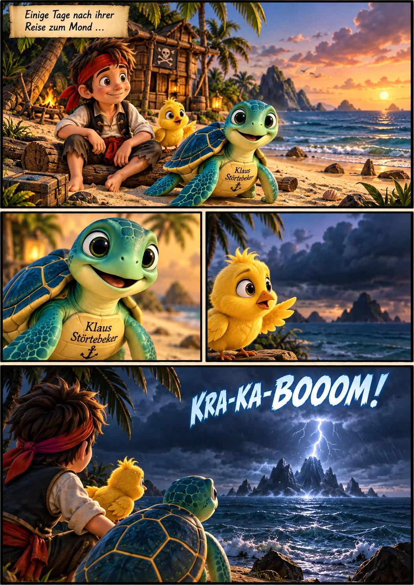
Der erste Donner · Seite 1 / 11 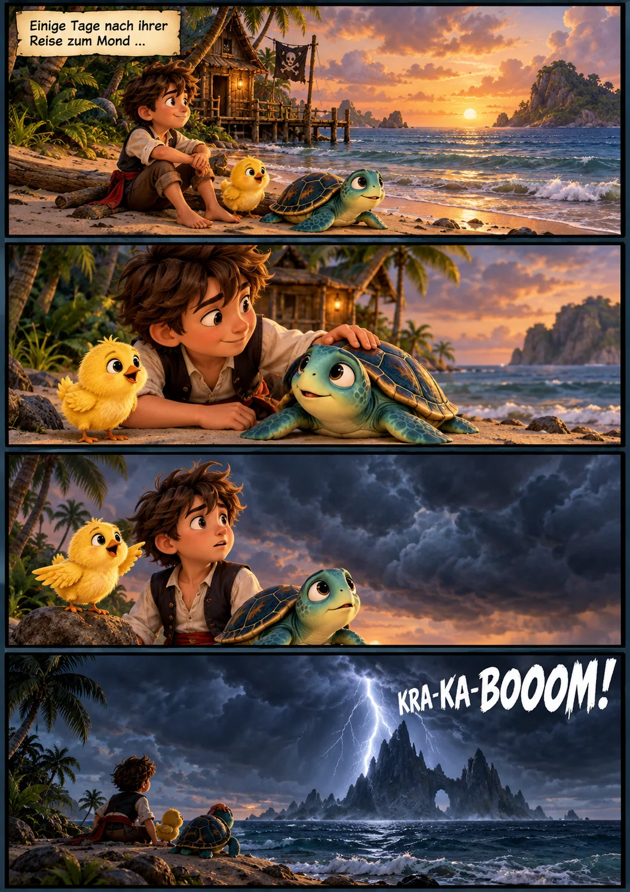
Ein anderer Abend am Strand · Seite 2 / 11 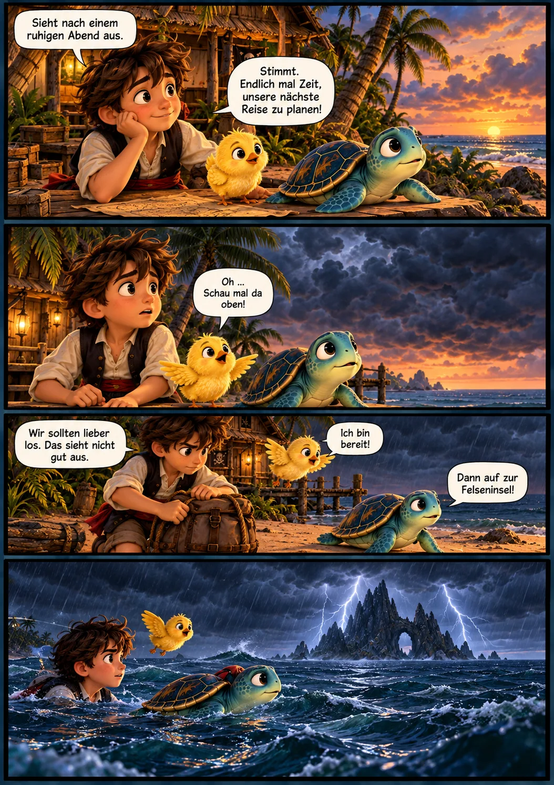
Aufbruch im Sturm · Seite 3 / 11 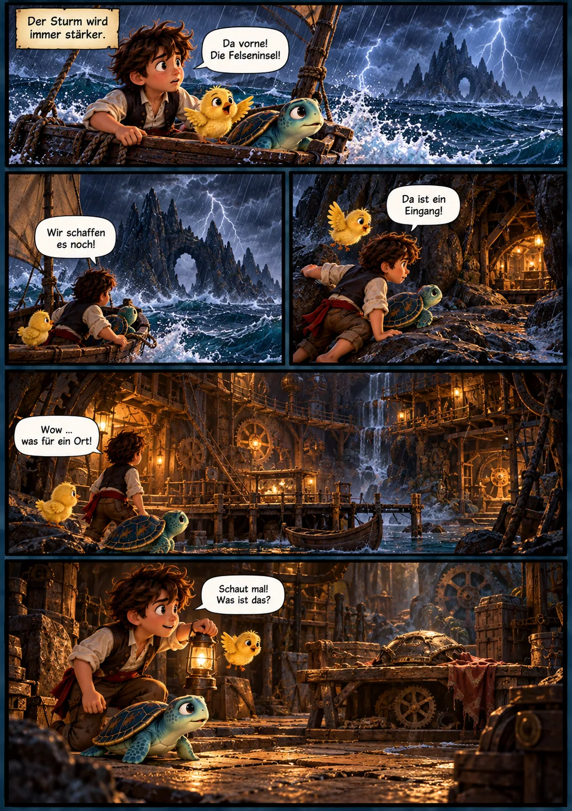
Sturmfahrt zur Felseninsel · Seite 4 / 11 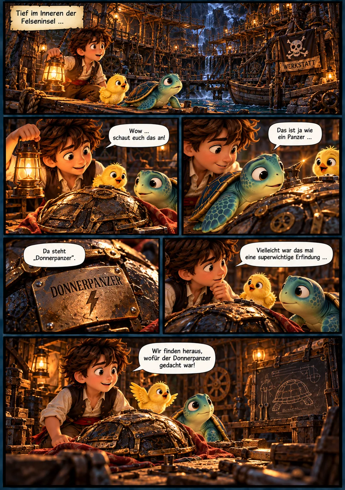
Der Fund in der Werkstatt · Seite 5 / 11 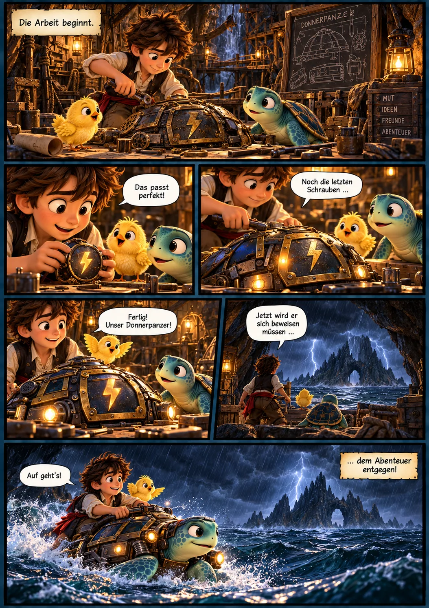
Der Donnerpanzer erwacht · Seite 6 / 11 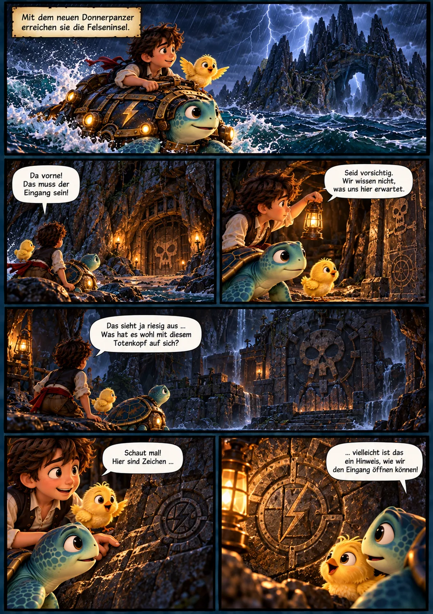
Das Tor im Felsen · Seite 7 / 11 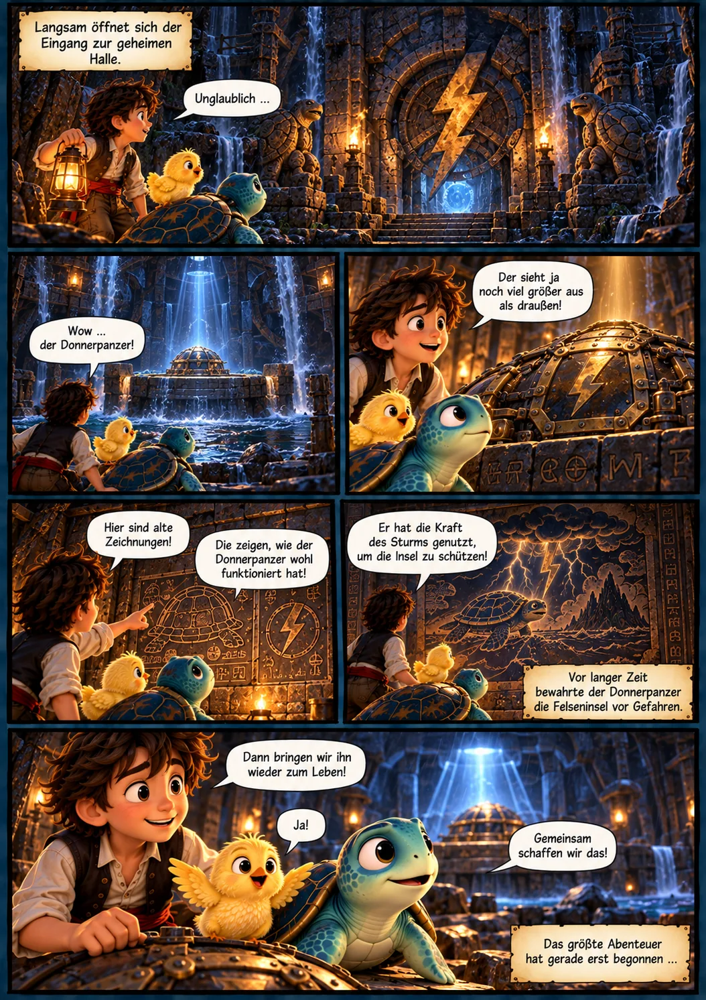
Die geheime Halle · Seite 8 / 11 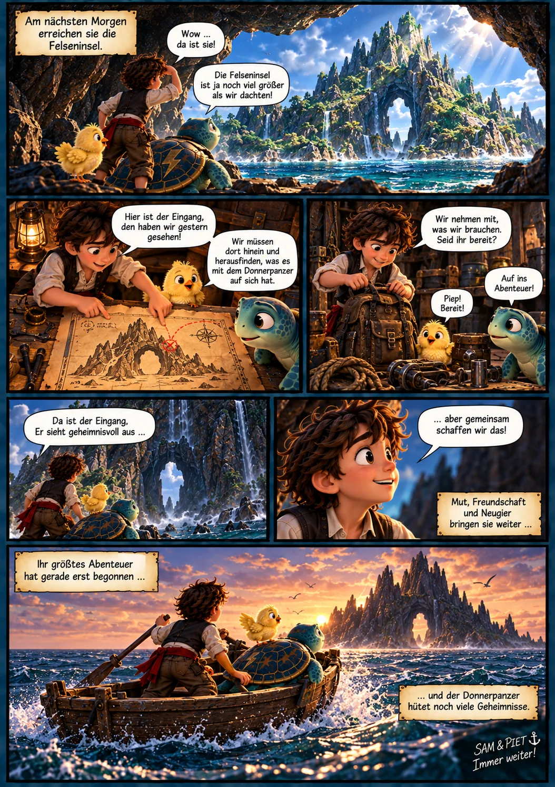
Eine andere Ankunft · Seite 9 / 11 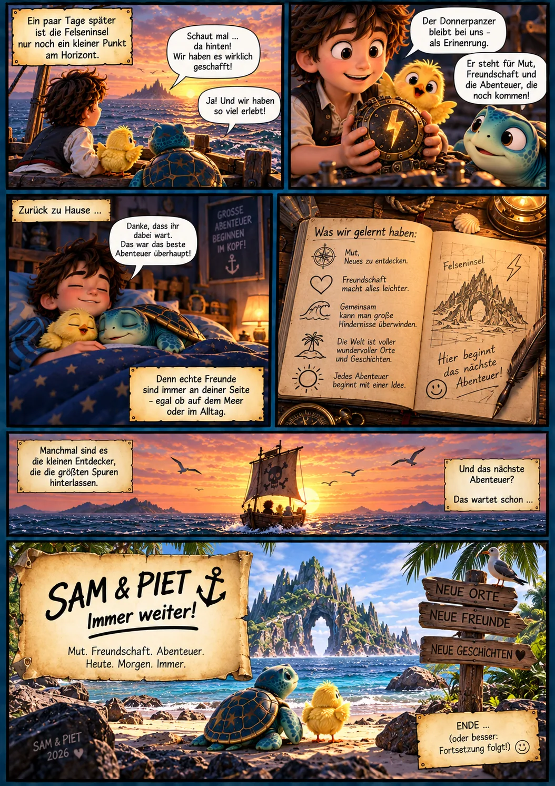
Abenteuer voraus – erster Schluss · Seite 10 / 11 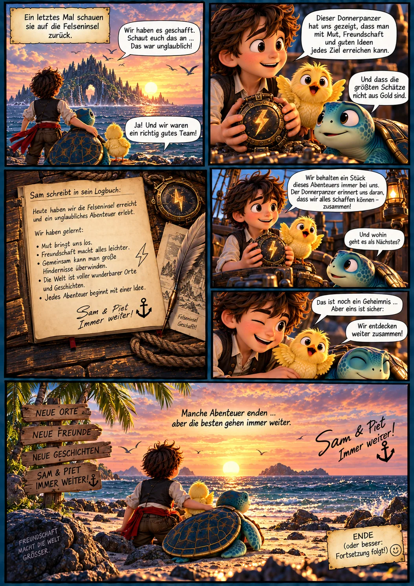
Immer weiter – zweiter Schluss · Seite 11 / 11 Zur Comic-Werkstatt